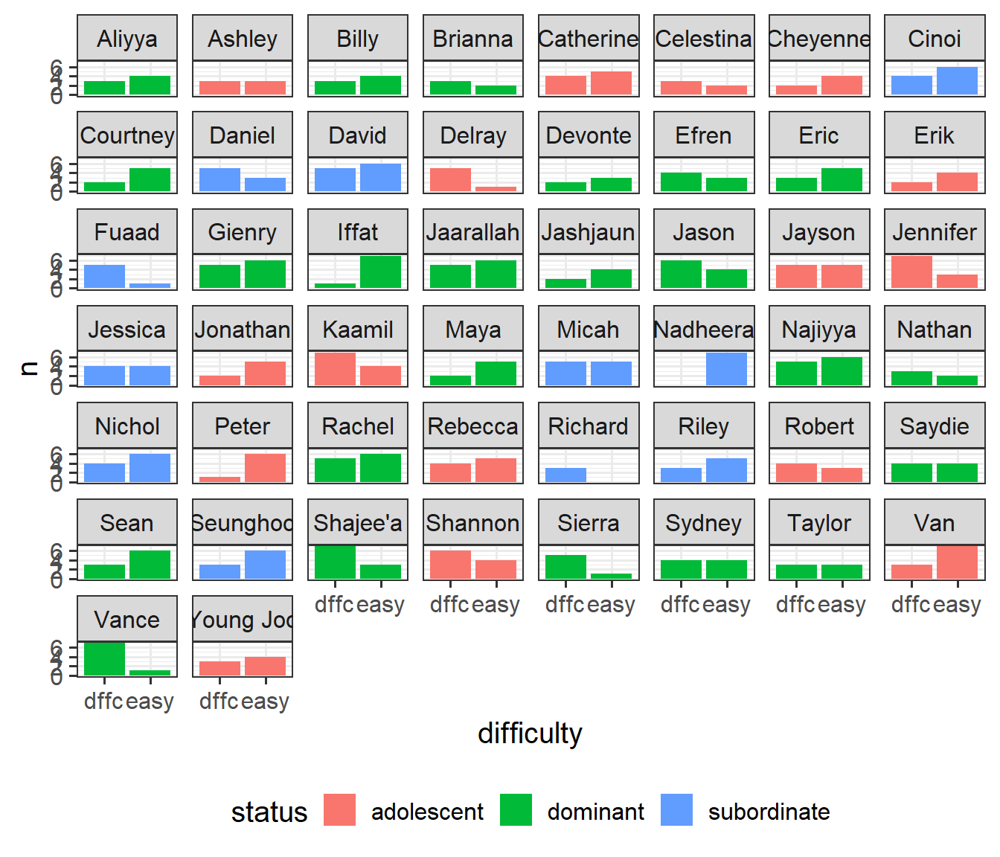
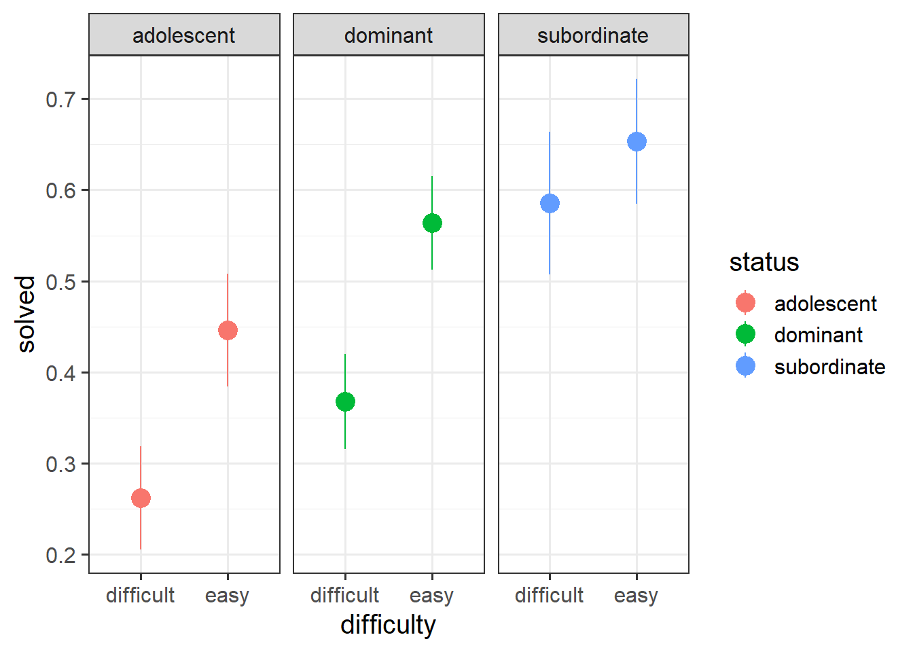

The vast majority of the transition across from linear multilevel models to logistic multilevel models is identical to what we talked about in USMR for single level regression models. Remember how we simply used glm() and could specify the family = "binomial" in order to fit a logistic regression? Well it’s much the same thing for multi-level models!
glmer(y ~ x1 + x2 + (1 | g), data = data, family = binomial(link='logit')) or
glmer(y ~ x1 + x2 + (1 | g), data = data, family = "binomial") or
glmer(y ~ x1 + x2 + (1 | g), data = data, family = binomial)
The same logic applies as it did for glm() where we are not modeling the outcome \(y\) directly, but via a mapping, or “link function”, which in this case is the logistic function. Beyond the material covered in USMR Week 10, there are a few aspects of the logistic multilevel model that are worth commenting on.
Firstly, GLMMs (‘generalised linear mixed models’) can take more time to run (for bigger datasets we’re talking minutes, and sometimes even hours!).
Secondly, our choices of methods of inference (see 2A) are slightly different from what they were for lmer(). We continue to have the likelihood based methods as well as parametric bootstrapping (although this will more often result in computational issues with glmer). We also have the traditional \(z\)-statistics that have carried over from glm(). We can get confidence intervals that follow this same method by using confint(model, method="Wald"), which may often be preferred purely for the fact that they are quick!
Finally, one small but noteworthy feature of the logistic multilevel model is that our fixed effects coefficients, when translated back to odds ratios, represent “cluster specific” effects of a predictor:
For a linear multilevel model: lmer(y ~ x + (1 + x | cluster)), the fixed effect of \(x\) gives the change in the \(y\) when \(x\) is increased by one unit, averaged across clusters
For a logistic multilevel model: glmer(ybin ~ x + (1 + x | cluster), family=binomial), the odds ratio for \(x\) - exp(fixef(model)) - gives the multiplicative change in odds of \(y\) when \(x\) is increased by one unit for a particular cluster.
This becomes important when deciding if we want to estimate outcomes for individual clusters, or estimate group effects (in which case a mixed model might not be best).
optional: why are OR from glmer cluster-specific?
Linear
consider a linear multilevel model: lmer(respiratory_rate ~ treatment + (1|hospital))
Imagine two patients from different hospitals. One has a treatment, one does not.
patient \(j\) from hospital \(i\) is “control”
patient \(j'\) from hospital \(i'\) is “treatment”
The difference in estimated outcome between patient \(j\) and patient \(j'\) is the “the effect of having treatment” plus the distance in random deviations between hospitals \(i\) and \(i'\)
model for patient \(j\) from hospital \(i\) \(\hat{y}_{ij} = (\gamma_{00} + \zeta_{0i}) + b_1 (Treatment_{ij} = 0)\)
model for patient \(j'\) from hospital \(i'\) \(\hat{y}_{i'j'} = (\gamma_{00} + \zeta_{0i'}) + b_1 (Treatment_{i'j'} = 1)\)
Because \(\zeta \sim N(0,\sigma_\zeta)\), the differences between all different \(\zeta_{0i'} - \zeta_{0i}\) average out to be 0.
Logistic
Now consider a logistic multilevel model: glmer(needs_operation ~ treatment + (1|hospital), family="binomial")
Imagine two patients from different hospitals. One has a treatment, one does not.
patient \(j\) from hospital \(i\) is “control”
patient \(j'\) from hospital \(i'\) is “treatment”
The difference in probability of outcome between patient \(j\) and patient \(j'\) is the “the effect of having treatment” plus the distance in random deviations between hospitals \(i\) and \(i'\)
model for patient \(j\) from hospital \(i\) \(log \left( \frac{p_{ij}}{1 - p_{ij}} \right) = (\gamma_{00} + \zeta_{0i}) + b_1 (Treatment_{ij} = 0)\)
model for patient \(j'\) from hospital \(i'\) \(log \left( \frac{p_{i'j'}}{1 - p_{i'j'}} \right) = (\gamma_{00} + \zeta_{0i'}) + b_1 (Treatment_{i'j'} = 1)\)
Hence, the interpretation of \(e^{b_1}\) is not the odds ratio for the effect of treatment “averaged over hospitals”, but rather for patients from the same hospital.
Example
Data: monkeystatus.csv
Our primate researchers have been busy collecting more data. They have given a sample of Rhesus Macaques various problems to solve in order to receive treats. Troops of Macaques have a complex social structure, but adult monkeys tend can be loosely categorised as having either a “dominant” or “subordinate” status. The monkeys in our sample are either adolescent monkeys, subordinate adults, or dominant adults. Each monkey attempted various problems before they got bored/distracted/full of treats. Each problems were classed as either “easy” or “difficult”, and the researchers recorded whether or not the monkey solved each problem.
We’re interested in how the social status of monkeys is associated with the ability to solve problems.
We know from the study background that we have a series group of monkeys who have each attempted to solve some problems. If we look at our data, we can see that it is already in long format, in that each row represents the lowest unit of observation (a single problem attempted). We also have the variable monkeyID which indicates what monkey each problem has been attempted by. We can see the status of each monkey, and the difficulty of each task, along with whether it was solved:
We can do some quick exploring to see how many monkeys we have (50), and how many problems each one attempted (min = 3, max = 11:
mstat |>count(monkeyID) |># count the monkeys! summary()
monkeyID n
Length:50 Min. : 3.00
Class :character 1st Qu.: 6.25
Mode :character Median : 8.00
Mean : 7.94
3rd Qu.:10.00
Max. :11.00
Let’s also see how many monkeys of different statuses we have in our sample:
mstat |>group_by(status) |># group statusessummarise(# count the distinct monkeysnmonkey =n_distinct(monkeyID) )
# A tibble: 3 × 2
status nmonkey
<chr> <int>
1 adolescent 16
2 dominant 23
3 subordinate 11
It’s often worth plotting as much as you can to get to a sense of what we’re working with. Here are the counts of easy/difficult problems that each monkey attempted. We can see that Richard only did difficult problems, and Nadheera only did easy ones, but most of the monkeys did both types of problem.
# which monkeys did what type of problems? mstat |>count(status, monkeyID, difficulty) |>ggplot(aes(x=difficulty,y=n, fill=status))+geom_col()+facet_wrap(~monkeyID) +scale_x_discrete(labels=abbreviate) +theme(legend.position ="bottom")

When working with binary outcomes, it’s often useful to calculate and plot proportions. In this case, the proportions of problems solved for each status of monkey. At first glance it looks like “subordinate” monkeys solve more problems, and adolescents solve fewer (makes sense - they’re still learning!).
# a quick look at proportions of problems solved:ggplot(mstat, aes(x=difficulty, y=solved,col=status))+stat_summary(geom="pointrange",size=1)+facet_wrap(~status)

models of monkeys
Now we come to fitting our model.
Recall that we are interested in how the ability to solve problems differs between monkeys of different statuses. It’s very likely that difficulty of a problem is going to influence that it is solved, so we’ll control for difficulty.
glmer(solved ~ difficulty + status +
...
data = mstat, family = binomial)
We know that we have multiple datapoints for each monkey, and it also makes sense that there will be monkey-to-monkey variability in the ability to solve problems (e.g. Brianna may be more likely to solve problems than Jonathan).
glmer(solved ~ difficulty + status +
(1 + ... | monkeyID),
data = mstat, family = binomial)
Finally, it also makes sense that effects of problem-difficulty might vary by monkey (e.g., if Brianna is just really good at solving problems, problem-difficulty might not make much difference. Whereas if Jonathan is struggling with the easy problems, he’s likely to really really struggle with the difficult ones!).
mmod <-glmer(solved ~ difficulty + status + (1+ difficulty | monkeyID),data = mstat, family = binomial)summary(mmod)
Generalized linear mixed model fit by maximum likelihood (Laplace
Approximation) [glmerMod]
Family: binomial ( logit )
Formula: solved ~ difficulty + status + (1 + difficulty | monkeyID)
Data: mstat
AIC BIC logLik deviance df.resid
503.7 531.6 -244.8 489.7 390
Scaled residuals:
Min 1Q Median 3Q Max
-1.9358 -0.6325 -0.3975 0.6748 2.5161
Random effects:
Groups Name Variance Std.Dev. Corr
monkeyID (Intercept) 1.633 1.278
difficultyeasy 1.371 1.171 -0.49
Number of obs: 397, groups: monkeyID, 50
Fixed effects:
Estimate Std. Error z value Pr(>|z|)
(Intercept) -1.2531 0.4051 -3.093 0.00198 **
difficultyeasy 0.8586 0.3053 2.812 0.00492 **
statusdominant 0.6682 0.4714 1.417 0.15636
statussubordinate 1.4596 0.5692 2.564 0.01033 *
---
Signif. codes: 0 '***' 0.001 '**' 0.01 '*' 0.05 '.' 0.1 ' ' 1
Correlation of Fixed Effects:
(Intr) dffclt sttsdm
difficltysy -0.436
statusdmnnt -0.712 0.031
statssbrdnt -0.592 0.033 0.497
test and visualisations of monkey status
To examine if monkey status has an effect, we can compare with the model without status:
And we can see that the status of monkeys is associated with differences in the probability of successful problem solving (\(\chi^2(2)\) = 6.44, p < 0.05).
And if we want to visualise the relevant effect, we can (as we did with glm()) plot on the predicted probability scale, which is much easier to interpret:
estimated odds of an adolescent monkey solving an easy problem
difficultyeasy
0.86
2.36
odds of successful problem solving are more than halved (0.42 times the odds) when a given monkey moves from an easy to a difficult problem
statusdominant
0.67
1.95
odds of success would be almost doubled (1.95 times the odds) if a monkey were to change from adolescent to dominant status (NB this is non-significant)
statussubordinate
1.46
4.30
odds of success would quadruple (4.3 times the odds) if a monkey were to change from adolescent to subordinate status
Side note
Contrast this with what we would get from a linear multilevel model. If we were instead modelling a “problem score” with lmer(), rather than “solved yes/no” with glmer(), our coefficients would be interpreted as the estimated difference in scores between adolescent and subordinate monkeys.
Note that estimating differences between groups is not quite the same idea as estimating the effect “if a particular monkey changed from adolescent to subordinate”. In the linear world, these two things are the same, but our odds ratios give us only the latter.
Footnotes
Remember that binary outcomes are just a special case of the binomial↩︎